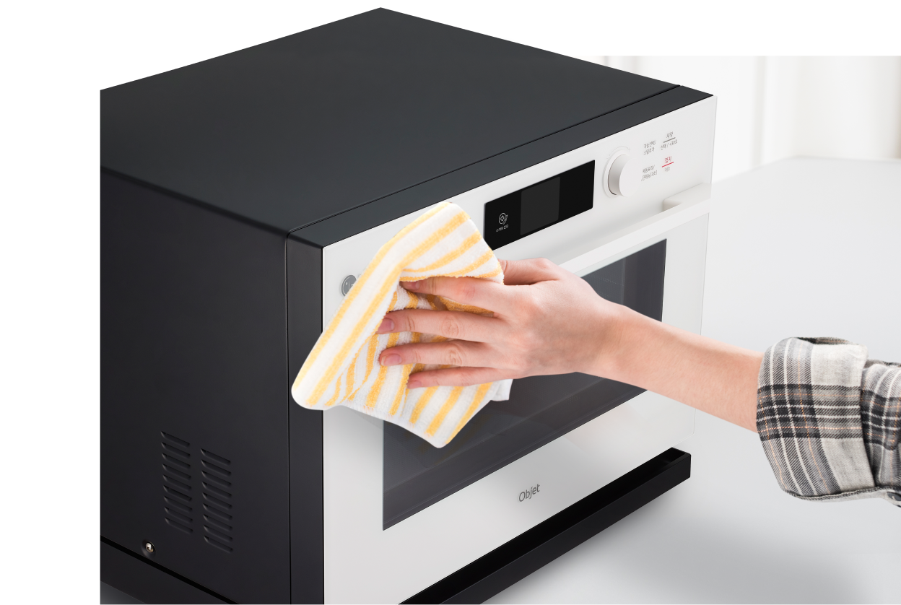

주방광파오븐
보다 더 스마트한 일상
LG ThinQ의 시작

보다 더 스마트한 일상, LG ThinQ
씽큐는 사람과 가전을 AI 기술로 연결하여 더 편리하고 놀라운 일상을 만드는 LG전자의 스마트 홈 플랫폼입니다.
* 본 콘텐츠는 ThinQ 앱의 콘텐츠입니다.
집에서도 레스토랑 요리를 즐기게 해주는 광파오븐, 하지만 청소와 관리는 쉽지 않죠?
기름기 있는 요리가 필연적일 수 밖에 없는 광파오븐은 금방 지저분해지고 눌어붙어서 청소가 더 중요해요.
01
문 안쪽 청소하기
제품 문 안쪽에 묻은 음식물 찌꺼기와 기름기는 스펀지나 행주로 눌어붙기 전에 먼저 닦아주세요.
02
스팀분출구 주변 닦기
스팀분출구 주변에 하얀 침전물이 눌어붙은 경우 스펀지에 양조 식초를 묻혀 닦아주면 효과적으로 제거할 수 있어요.
03
조리실 전면 닦기
부드러운 수세미에 중성세제를 묻혀 결에 따라 좌우로 닦은 후 마른행주로 한 번 더 닦아주세요.
다용도 세제를 사용할 경우 제품 오작동의 원인이 될 수 있으므로 반드시 중성세제를 사용하세요.
04
조리실 내부 청소하기
행주나 스펀지에 중성세제를 묻혀 결에 따라 좌우로 닦은 후 마른행주로 한 번 더 닦아 주세요.
01
탈취
요리 후 조리실 내부의 음식 냄새를 줄일 때 사용하는 기능이에요.
제품 구입 후 처음 사용할 때 냄새가 나면 탈취 기능을 사용하세요. 초기 냄새를 제거할 때 효과적이에요.[탈취 기능 사용 방법]
1. 조리실 내부를 비우세요. 2. [기능선택/스팀추가] 버튼을 누르세요. 3. [기능선택/조절] 다이얼을 돌려 [멀티클린]을 선택하세요. 4. [시작/선택/+30초] 버튼을 누르세요. 5. [기능선택/조절] 다이얼을 돌려 [탈취]를 선택하세요. 6. [시작/선택/+30초] 버튼을 누르세요. 설정된 시간만큼 작동한 후 탈취가 종료됩니다.[주의사항]
· 탈취 기능을 사용할 때는 조리실 내부가 뜨거워 플라스틱 용기 등이 녹을 수 있으므로, 조리실 내부가 비었는지 다시 한번 확인하세요. · 탈취 기능을 사용한 후에는 조리실 내부가 뜨거우므로 화상을 입지 않도록 주의하세요.
02
스팀 청소
조리실 벽면이나 바닥면에 묻은 기름때 등을 쉽게 청소할 수 있는 기능이에요.
요리가 끝나고 약 15분 정도 제품을 식힌 후에 스팀 청소 기능을 사용하면 효과적입니다.[탈취 기능 사용 방법]
1. 물통에 물을 채워 제품에 설치하고, 조리실 내부를 비우세요. 2. [기능선택/스팀추가] 버튼을 누르세요. 3. [기능선택/조절] 다이얼을 돌려 [멀티클린]을 선택하세요. 4. [시작/선택/+30초] 버튼을 누르세요. 5. [기능선택/조절] 다이얼을 돌려 [스팀 청소]를 선택하세요. 6. [시작/선택/+30초] 버튼을 누르세요. 7. 스팀 청소가 종료되어 멜로디가 울리면, 마른행주로 조리실 내부의 물기를 닦으세요. 8. 물통과 물받이의 물을 비우고, 깨끗이 씻어주세요.
03
조리실 건조
스팀 기능(스팀 요리, 스팀 청소)을 사용한 후, 조리실의 물기를 제거할 때 사용하는 기능이에요.
요리 종료 후 제품 내부의 열기를 식히기 위해 냉각팬이 자동으로 작동할 수 있습니다. 고장이 아니므로 안심하고 사용하세요.[조리실 건조 사용 방법]
1. 조리실 내부를 비우고, 고여있는 물기를 닦으세요. 2. [기능선택/스팀추가] 버튼을 누르세요. 3. [기능선택/조절] 다이얼을 돌려 [멀티클린]을 선택하세요. 4. [시작/선택/+30초] 버튼을 누르세요. 5. [기능선택/조절] 다이얼을 돌려 [조리실 건조]를 선택하세요. 6. [시작/선택/+30초] 버튼을 누르세요. 7. 조리실 건조가 종료되어 멜로디가 울리면, 마른행주로 조리실 내부의 물기를 닦으세요.[주의사항]
· 조리실 건조 기능 사용 후에는 조리실 내부가 뜨거우므로 화상을 입지 않도록 주의하세요.
04
잔수 제거
스팀발생기에 남아있는 잔수를 제거할 때 사용하는 기능이에요.
스팀 요리 진행 중 요리 시간이 남은 상태에서 종료했을 때 잔수 제거 기능을 사용하면 스팀발생기 내에 남은 물이 완전히 제거됩니다.[잔수 제거 사용 방법]
1. 조리실 내부를 비우세요. 2. 제품에서 물통을 빼내어 놓거나, 물통을 설치한 상태로 사용하실 때는 물통에 있는 물을 모두 비우세요. 3. [기능선택/스팀추가] 버튼을 누르세요. 4. [기능선택/조절] 다이얼을 돌려 [멀티클린]을 선택하세요. 5. [시작/선택/+30초] 버튼을 누르세요. 6. [기능선택/조절] 다이얼을 돌려 [잔수 제거]를 선택하세요. 7. [시작/선택/+30초] 버튼을 누르세요. 8. 잔수 제거 기능이 종료되어 멜로디가 울리면, 물통과 물받이의 물을 비우고 깨끗이 씻어주세요.
05
스팀발생기 세정
스팀 요리를 장시간 사용 후 스팀발생기 내부에 발생할 수 있는 하얀 침전물을 제거할 때 사용하는 기능이에요.
· 스팀발생기 세정 기능을 정기적으로 사용하면, 스팀 성능을 일정하게 유지할 수 있습니다. · 스팀발생기 내부의 하얀 침전물은 물속에 함유된 미네랄 성분이므로 인체에 무해하나 정기적인 청소로 조리실 내부를 꺠끗한 상태로 사용하는 것을 권장 드립니다.[스팀발생기 세정 방법]
1. 조리실 내부를 비우세요. 2. 물통에 물과 식초를 약 6:1(물 200cc, 식초 30cc) 비율로 넣으세요. 3. 물통과 물받이를 꼭 맞게 꽂으세요. 4. [기능선택/스팀추가] 버튼을 누르세요. 5. [기능선택/조절] 다이얼을 돌려 [멀티클린]을 선택하세요. 6. [시작/선택/+30초] 버튼을 누르세요. 7. [기능선택/조절] 다이얼을 돌려 [스팀발생기 세정]을 선택하세요. 8. [시작/선택/+30초] 버튼을 누르세요. 9. 스팀발생기 세정중 멜로디가 울리며 표시부에 시작/선택/+30초, 물 보충 알림 화면이 나타나면, 물통을 깨끗한 물로 다시 채우세요. 10. [시작/선택/+30초] 버튼을 누르세요. 11. 스팀발생기 세정이 종료되어 멜로디가 울리면, 마른 행주로 조리실 내부의 물기를 닦으세요.[주의사항]
· 스팀발생기 세정 기능을 사용하기 전에는 물받이를 비우세요. 스팀발생기 세정 기능에 사용된 물은 물받이를 통해 배출됩니다. 사용 후에는 다음 요리를 위해 물통과 물받이를 깨끗이 씻으세요. · 식초는 사과 식초나 레몬 식초는 사용하지 마시고, 양조 식초를 사용해 주세요. · 스팀발생기를 세정할 때는 주방세제, 락스, 표백제 등의 세제류는 넣지 마세요.

제품 외부의 전면 유리와 투시 창은 행주나 스펀지에 중성세제를 묻혀 닦은 후 마른행주로 한 번 더 닦아주세요.
다용도 세제를 사용할 경우 제품 오작동의 원인이 될 수 있으므로 반드시 중성세제를 사용하세요.
* 부속품 구성은 제품에 따라 상이할 수 있습니다.
32L 물통 / 물받이
물통과 물받이는 스팀 요리 종료 후 물을 비우고, 다음 요리를 위해 깨끗이 씻어 주세요.
32L 석쇠
석쇠는 중성세제를 사요하여 깨끗이 씻은 후 물기를 닦아주세요.
석쇠를 장시간 물에 넣지 마세요. 접착제가 녹을 수 있습니다.32L 전용 법랑 접시
32L 전용 법랑 접시는 물에 30분 정도 불린 후 행주, 스펀지, 부드러운 수세미 등을 사용하여 닦으세요.
철 수세미로 닦거나 식초, 구연산, 산성용액은 코팅이 벗겨지게 할 수 있으므로 사용하지 마세요.32L 전용 구이 전용 팬
32L 전용 구이 전용 팬은 표면이 청소하기 쉽게 특수 코팅이 되어 있으니 청소 시 39L 발열 팬과 동일한 방법으로 스펀지를 사용해 주세요.
쇠 주걱과 쇠 수세미를 사용하면 특수 코팅이 벗겨질 수 있으므로 사용하지 마세요.39L 제품 회전 유리 접시
39L 제품의 회전 유리접시는 중성세제를 사용하여 청소 후 물기를 닦아주세요.
회전 유리접시가 뜨거울 때는 차가운 물에 바로 넣으면 깨질 수 있으니 유의해 주세요.멀티클린 기능을 활용하면 보다 쉽고 편리하게 청소하고 관리할 수 있어요.


LG ThinQ
ThinQ 하나로 더 좋아지는 일상
일상을 더 편하고 스마트하게 만들어주는 씽큐 앱을 지금 바로 만나보세요.
- #광파오븐
- #오븐
- #오븐관리
- #멀티클린
- #오븐청소
- #오븐관리방법
- #오븐오래사용하는방법
- #멀티클린기능